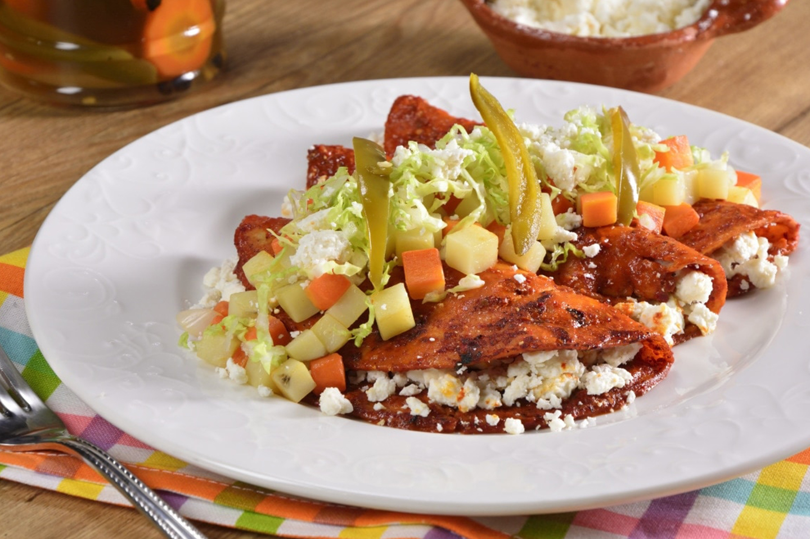

ENCHILADAS MINERAS

GUANAJUATO ES FAMOSO POR LA ACTIVIDAD MINERA Y ESTE PLATILLO REPRESENTA LA VERSIÓN LOCAL DE LAS TORTILLAS FRITAS BAÑADAS EN UN MOLE ELABORADO CON CHILES, EN ESTE CASO GUAJILLOS, DE LAS TRADICIONALES ENCHILADAS QUE SE PREPARAN EN VARIOS ESTADOS DE LA REPÚBLICA, CON LA VARIANTE DE QUE ESTAS SE SIRVEN ACOMPAÑADAS DE PAPAS Y ZANAHORIAS EN CUBOS FRITOS.
PUEDEN IR RELLENAS DE QUESO FRESCO Y CEBOLLA O CARNE. SE ADORNAN CON LECHUGA Y A VECES SE ACOMPAÑAN CON UNA PÍEZA DE POLLO FRITO. EL SABOR DE LAS PAPAS Y LAS ZANAHORIAS FRITAS EN EL MISMO SARTÉN DONDE SE PREPARAN LAS ENCHILADAS Y EL POLLO, LE DAN UN SAZÓN SIMPLEMENTE DELICIOSO.
ASÍ QUE NO DEJES DE PROBAR ESTA COMIDA TÍPICA DE GUANAJUATO ENCHILADAS MINERAS.